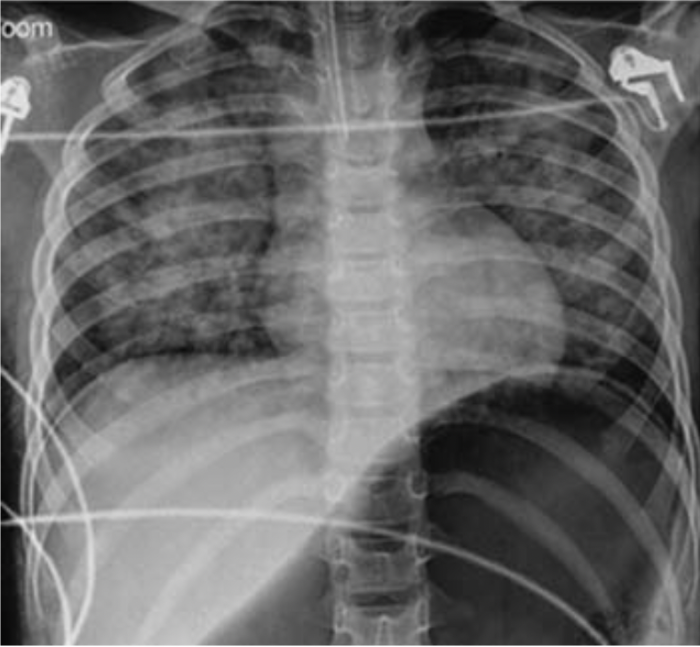
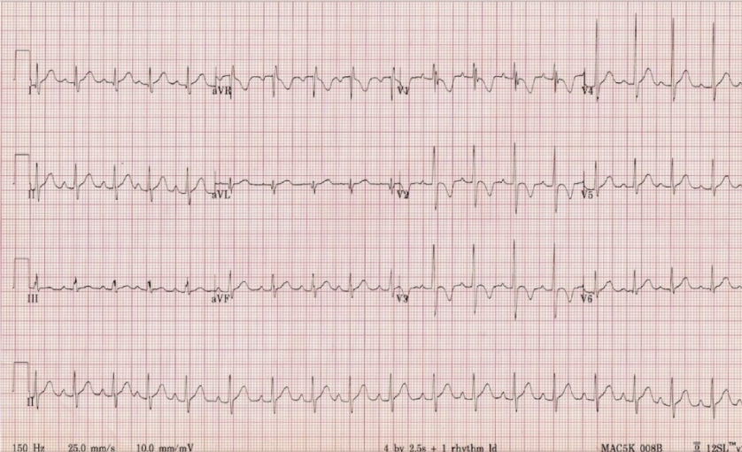

Rx Tórax AP • Portátil
POST-INTUBACIÓN

Tubo ET
Infiltrado Alveolar
Electrocardiograma (ECG 12D)
BRADICARDIA (<60 lpm)

25 mm/s • 10 mm/mV
SpO₂: 82%
FC: 54 lpm
Lucas Mateo
Valenzuela
Rodríguez
3 años • Código Rojo
ÓRGANO AFECTADO
Pulmón / Vías Aéreas
DIAGNÓSTICO INGRESO
Sumersión & Edema Pulmonar
ESTADO RESPIRATORIO
Hipoxemia Post-Intubación (82%)
RITMO CARDÍACO
Bradicardia Pediátrica (<60 lpm)
PROTOCOLO APLICADO
PALS: RCP (1 Ciclo) + O₂ 100%
DESTINO / TRASLADO
Ingreso Inmediato a UCIP
EVOLUCIÓN CLÍNICA & NOTA MÉDICA
Preescolar de 3 años rescatado tras inmersión accidental en piscina profunda. Ingresa inconsciente con fallo respiratorio y secreción espumosa. Tras intubación presenta hipoxemia y bradicardia severa; se ejecuta RCP PALS efectiva con soporte ventilatorio avanzado, logrando estabilización para entrega formal a UCIP.
ID: #PEDS-302 • EHR VERIFICADO
Dra. Sarah J. Evans
Especialista en Urgencias Pediátricas
Interconsulta UCIP Activa